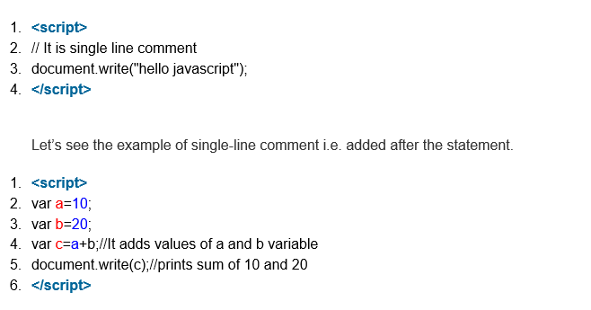
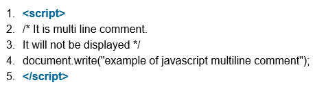

Comments in Java Script
The JavaScript comments are meaningful way to deliver message. It is used to add information about the code, warnings or suggestions so that end user can easily interpret the code.
The JavaScript comment is ignored by the JavaScript engine i.e. embedded in the browser.
Advantages of JavaScript comments
There are mainly two advantages of JavaScript comments.
1. To make code easy to understand : It can be used to elaborate the code so that end user can easily understand the code.
2. To avoid the unnecessary code : It can also be used to avoid the code being executed. Sometimes, we add the code to perform some action. But after sometime, there may be need to disable the code. In such case, it is better to use comments.
Types of JavaScript Comments
There are two types of comments in JavaScript.
1. Single-line Comment
2. Multi-line Comment
JavaScript Single line Comment
It is represented by double forward slashes (//). It can be used before and after the statement.
Let’s see the example of single-line comment i.e. added before the statement.

JavaScript Multi line Comment
It can be used to add single as well as multi line comments. So, it is more convenient.
It is represented by forward slash with asterisk then asterisk with forward slash. For example:
1. /* your code here */
It can be used before, after and middle of the statement.
